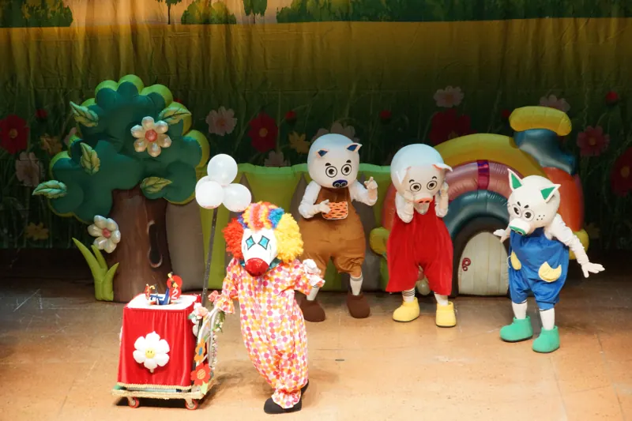

줄거리
꿀꿀이 삼총사는 서로를 아끼며 늘 함께 지내는 삼형제입니다. 든든한 첫째, 먹는 걸 좋아하는 둘째, 재치가 넘치는 막내가 사이좋게 지내고 있지요. 그런데 호시탐탐 삼형제를 노리는 배고픈 늑대 로보가 있습니다. 로보는 온갖 방법으로 삼형제를 잡아먹으려 하지만, 삼형제가 늘 함께 있어서 번번이 실패하고 맙니다.
어느 날 마을에 피에로가 나타나 삼총사에게 미션 게임을 제안합니다. 첫째는 동네 한 바퀴, 둘째는 제자리 춤, 막내는 운동장 다섯 바퀴! 첫째와 막내가 각자 미션을 하러 떠나면서 둘째만 혼자 남게 됩니다.
사실 이 피에로는 변장한 로보였어요. 혼자가 된 둘째를 납치하려 하지만, 둘째는 침착하게 관객에게 도움을 요청하고 그 소리를 들은 첫째가 달려와 위기를 막아냅니다.
그런데 이번엔 막내가 사라졌습니다! 첫째와 둘째가 막내를 찾아 나선 사이, 로보는 할머니로 변장해 막내에게 다가갑니다. 날이 점점 어두워지고, 도와달라는 할머니를 그냥 지나칠 수 없었던 착한 막내는 결국 손을 내밀고 마는데... 막내는 과연 이 위기를 무사히 넘길 수 있을까요?
공연 사진
「심술꾼 로보와 꿀꿀이 삼총사」 공연을 원하시나요?
직장어린이집·유치원·학교·기관 어디든 찾아갑니다. 달력에서 빈 날을 골라 문의해 주세요.